[Index]
これまでの研究(Previous studies)[1990-2025]
研究のはじまり
Introduction
-
学部学生の頃、加藤真さんの勧めで1年間休学して
沖縄県石垣市にいた時に石垣島白保のサンゴ礁の赤土汚染を調べました。
初めて、自分の仕事が出版物(野池1990)に載りました。
さらに、この仕事は大垣＆野池(1992)に引用されました。
この仕事をふりかえってみると、
研究、そして出版、引用の大切さをあらためて感じます。
-
石垣島東岸の轟川河口海域の底質中の陸源懸濁物濃度を測定し、
轟川流域で行われていた土地改良事業が
白保のサンゴ礁に赤土汚染をもたらしていることを示唆しました。
-
野池元基
(1990)
サンゴの海に生きる＿石垣島・白保の暮らしと自然。
人間選書146。農山漁村文化協会。東京。
-
大垣俊一・野池元基
(1992)
沖縄県石垣島の土地改良事業と白保のサンゴ礁。
日本生態学会誌42: 9-20.
-
その後の研究の科学的貢献は、
「ハナバチ群集では、餌資源が形質進化に、巣場所が個体群動態に影響する」
「植物の交雑は、地理的分布の端で変異をもたらす」
とまとめられます。
ハナバチでは、餌資源が形質進化に、巣場所が個体群動態に影響する
Foods affect evolution, nest sites affect demography, in bees
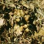
1
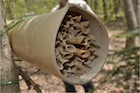
2
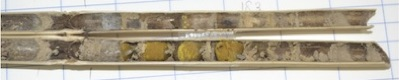
3
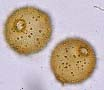
4
1: コマルハナバチの巣(Nest of Bombus ardens)
2: マメコバチの巣(Nest of Osmia cornifrons)
3: マメコバチの巣内(Chambers of Osmia cornifrons nest)
4: タニウツギの花粉(Pollen of Weigela hortensis)
-
修士課程の頃、滋賀県朽木村に住みながら
京大芦生演習林でやった仕事です。
当時は、井上民二さんや加藤真さんが
「ポリネーターゼミ」という研究会をやっていました。
そこに、角谷岳彦さんや須賀丈さん、私などが参加していました。
この研究会は、
送粉生態学を群集レベルで研究することに
意欲的に取り組んでいました。
京都市のさまざまな植生で訪花昆虫群集を調べました。
-
訪花観察の次のステップとして、
私のテーマはハナバチの花粉利用になりました。
花にくるハナバチを見るのでなく、
ハナバチが持ち帰る花粉を調べて
利用植物をあきらかにしようということです。
そのため、永益英敏さんの指導を受けて、
芦生演習林の植物の花粉形態の分類と検索をやりました
(Nagamitsu & Nagamasu 1994 Contr Biol Lab Kyoto Univ)。
すべての科のハナバチを網羅的に調べましたが、
結局論文になったのは、
ミツバチだけでした(Nagamitsu & Inoue 1999 J Apic Res)。
ニホンミツバチとセイヨウミツバチは、
まとまって咲く樹木の花粉を共通して利用しましたが、
春と秋に利用花粉に違いがみられました。
-
花粉分析の技術を生かして、
熱帯のマルハナバチの花粉源植物を調べました
(Kato et al. 1992 Jpn J Entomol)。
個体標識したマルハナバチが連続して採餌した花粉源植物を調べ、
どのように餌植物を切り替えているのかをあきらかにしました
(Nagamitsu et al. 2000 Entomol Sci)。
十勝地方で採集されたオオマルハナバチの巣に蓄えられた花粉を調べ、
園芸植物と農作物の花粉の利用が周囲の景観に左右されるとこが
わかりました
(Takeuchi et al. 2005 Bull FFPRI)。
帯広市の農地景観で、マルハナバチの採餌環境と餌利用を調べました
(Nagamitsu et al. 2012 Appl Entomol Zool)。
-
日本全国から採集されたニホンミツバチの遺伝子型を調べ、
均質な遺伝構造を持つことをあきらかにし、
局所的な遺伝的多様性に与える気候や土地利用の影響を検出しました
(Nagamitsu et al. 2016 PLoS One)。
さらに、それらのニホンミツバチの安定同位体比を調べました
(Taki et al. 2017 Biodiv Conserv)。
また、ニホンミツバチの農薬耐性をあらかにしました
(Yasuda et al. 2017 J Economic Entomol)。
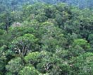
1
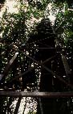
2
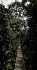
3
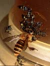
4
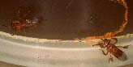
5
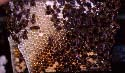
6
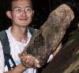
7
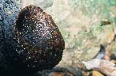
8
1: 低地フタバガキ林(Lowland mixed dipterocarp forest)
2: ツリータワー(Tree tower)
3: ウォークウェイ(Walk way)
4: 給蜜器にきたミツバチとハリナシバチ(Honey bee and stingless bees on a nectar feeder)
5: 給蜜器にきたハリナシバチ(Stingless bees on a nectar feeder)
6: ボルネオミツバチの巣(Nest of Apis koschevnikovi)
7: ハリナシバチの巣(Nest of stingless bees)
8: ハリナシバチの巣の入り口(Entrance of a stingless-bee nest)
-
博士課程の頃、
マレーシア、サラワク州、ランビル丘陵国立公園で
フタバガキ林におけるハリナシバチの餌資源分割を調べました。
井上民二さんが京大生態研に移り、
サラワク林冠生物学計画を立ち上げた時でした。
百瀬邦泰さんといっしょに現地に送り込まれた最初の院生になりました。
その後、酒井章子さんやRhett D. Harrisonさんがやってきました。
-
私のテーマはハリナシバチの資源分割でした。
ハリナシバチは、体の小さなミツバチの仲間で、
熱帯にしか分布せず、たくさんの種がいます。
同所的に分布するこれらの種が、
どのように餌を利用しているかを研究しました。
ハリナシバチは、坂上昭一さんと井上民二さんが
スマトラを中心に研究をされていたので、
分類や生態がかなりわかっていました。
-
研究の結果、
餌場の防衛行動と採餌空間が共存種間で違うこと
(Nagamitsu & Inoue 1997 Oecologia)、
口器形態の種間変異
(Nagamitsu & Inoue 1998 Entomol Sci)と
花粉資源の分割
(Nagamitsu et al. 1998 Res Popul Ecol)、
および、
その一斉開花への反応への種間差
(Nagamitsu & Inoue 2002 Apidologie)
があきらかになりました
(Nagamitsu and Inoue 2005 Sarawak Studies)。
-
マレーシア、サバ州で、鮫島弘光さんが、
伐採後の経過年数の異なる林で
ハリナシバチの群集構造を調べました
(Samejima et al. 2004 Biol Conserv)。
その結果、
伐採によって大きな木が少なくなると営巣場所がなくなるため、
密度が低下する種がいることがわかりました。
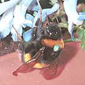
1
1: エゾエンゴサクを訪花するセイヨウオオマルハナバチ
(Bombus terrestris visiting flowers of Colydalis ambigua)
-
森林総合研究所に就職し、北海道支所にきました。
科研費（2004–2006若手B）が当たり、
マルハナバチの研究ができるようになりました。
千歳市、恵庭市、長沼町の千歳川流域は温室トマトの栽培が盛んです。
この地域における外来種セイヨウオオマルハナバチと在来マルハナバチ種を
ウインドウトラップを用いて調査しました
(Inari et al. 2005 Popul Ecol)。
2004年のトラップ調査のデータを用いて、
在来種の個体数と体サイズを決定する要因が、
外来種の個体数ではなく、土地利用などの環境条件であることを示唆しました
(Nagamitsu et al. 2007 Ecol Res)。
さらに、捕獲した働き蜂の遺伝子型を用いて、
定着した外来種のコロニー数と遺伝構造を推定し、
近親交配で二・三倍体雄が生じていることを示しました
(Nagamitsu & Yamagishi 2009 Apidologie)。
-
外来種の侵入が在来種の採餌効率と在来植物の送粉成功に与える影響を
調べるため、温室を用いた閉鎖系実験を行いました。
2日間の採餌期間における女王の体重とコロニーの巣重の変化を測定しましたが、
あきらかな外来種との競争はみられませんでした
(Nagamitsu et al. 2007 J Insect Conserv)。
同様にして、7種の在来植物の被訪花頻度と、結実率、果実の質を調べ、
外来種の訪花によって結実の量と質が低下する種の存在がわかりました
(Kenta et al. 2007 Biol Conserv)。
さらに、野外除去実験を行い、
外来種女王の除去により在来種女王の個体数が増加することを示しました
(Nagamitsu et al. 2010 Popul Ecol)。
-
森林総研のつくば本所に単身赴任になりました。
科研費（2012–2016基盤B）が当たり、
森林景観がハナバチの送粉機能に与える影響を調べました。
茨城県北部の林業地域で広葉樹林の面積と配置が異なる12地点で
マメコバチの営巣と採餌を比較し、
広葉樹林の面積が大きいほど営巣効率が高まることを示しました
(Nagamitsu et al. 2017 Ecol Entomol)。
-
内閣府に出向し、霞が関で宮仕えしたあと、北海道支所に戻りました。
北海道大学で坂上昭一が1959年に始めたハナバチ調査を2018/2019年に再開し、
1959–1989年に比べて年間採集個体数がほぼ半減していることをあきらかにしました
(Nagamitsu et al. 2024 Ecol Res)。
地中営巣性のコハナバチやヒメハナバチ、
植物の茎への借孔営巣性のツヤハナバチが特に減ったことから、
都市緑地における人工舗装の増加と樹林の成熟、自然草地の減少が
ハナバチの減少のおもな要因だと考えられます。
植物の繁殖生態学
Reproductive ecology in plants
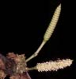
1
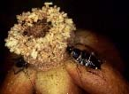
2
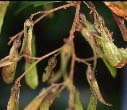
3
1: グネツムの花(Flowers of Gnetum)
2: バンレイシの花(Annonaceous flowers)
3: フタバガキの果実(Fruits of dipterocarps)
-
サラワク林冠生物学計画の目標のひとつは、
東南アジアのフタバガキ林だけでみられる
一斉開花を観測することでした。
展葉、開花、結実を定期的に観察し、
さまざまなトラップで昆虫を採集していました
(Kato et al. 1995 Res Popul Ecol)。
花香成分による誘引トラップで採集された
ゾウムシの垂直分布をあきらかにしました
(Watanabe et al. 2017 Elytra)。
林冠アクセスシステムを利用して
蝶と鳥の空間分布も調べました
(Koike & Nagamitsu 2003 Arthropods Tropical Forests)。
私は、1993年に現地に入りましたが、
一斉開花に遭遇したのは1996年でした。
-
長期にわたる観測の結果、
開花と結実の時系列変動
(Sakai et al. 1999 Am J Bot;
Sakai et al. 2005 Sarawak Studies;
Sakai et al. 2025 Ecology)と
昆虫の一斉開花への反応
(Itioka et al. 2003 Arthropods Tropical Forests;
Kishimoto-Yamada et al. 2009 Bull Entomol Res)
がまとめられました。
とくにオオミツバチは一斉開花の時しか
フタバガキ林にやってきませんでした
(Itioka et al. 2001 Ann Entomol Soc Am)。
-
サラワク林冠生物学計画のもうひとつの目標は、
世界でもっとも種多様性が高い
フタバガキ林の送粉相互作用をあきらかにすることでした。
とにかく、次から次へと新しい送粉システムが発見されました。
これらの結果は、
コスタリカの研究と双璧を成す形でまとめられました
(Momose et al. 1998 Am J Bot)。
-
グネツムの昆虫媒(Kato et al. 1995 Am J Bot)、
バンレイシのゴキブリ媒(Nagamitsu & Inoue 1997 Am J Bot)と
アザミウマ媒(Momose et al. 1998 Biotropica)
フタバガキのハリナシバチ媒(Momose et al. 1996 Plant Species Biol)と
甲虫媒(Nagamitsu et al. 1999 Garden Bull Singapore)、
蛾媒(Harrison et al. 2005 Malayan Nature J)
があきらかになりました。
-
森林総研に就職する前のポスドクの時に、
遺伝マーカーを用いたフタバガキの集団遺伝学をやりました。
ランビルとともに半島マレーシアのパソ−も訪れました。
フタバガキのマイクロサテライトマーカーの開発
(Ujino et al. 1998 Heredity)と
交配様式の研究(Nagamitsu et al. 2001 Int J Plant Sci)を行い、
それらの結果が総説にまとめられました
(Tsumura et al. 2003 Pasoh)。
-
これらの仕事に対して
日本農学進歩賞
をいただきました。
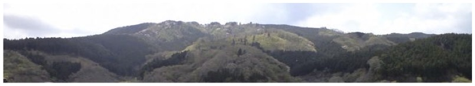
1
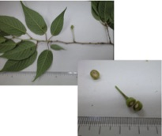
2
1: 茨城県北部の林業地域の景観(Landscape of a forestry region)
2: カスミザクラの果実(Fruits of Cerasus leveilleana)
-
樽前山の噴火後に成立したシウリザクラ集団の
クローン多様度、遺伝構造、更新様式をあきらかにしました
(Nagamitsu et al. 2004 Plant Ecol)。
さらに、クローン成長が雌の有性繁殖に負の効果を与えることを示しました。
(Mori et al. 2009 Popul Ecol)。
-
タチヤナギの両性変異株をもちいて、
両性変異が遺伝することと自殖による適応度成分の低下をあきらかにしました
(Nagamitsu & Futamura 2014 Bot Stud)。
-
千歳市の郊外景観で、集団サイズや森林断片化、市街化が
クロビイタヤの種子生産と遺伝子流動に与える効果を調べ、
小集団で種子生産が低下し、
森林断片化によって空間遺伝構造が弱まることをあきらかにしました
(Nagamitsu et al. 2014 Am Mid Nat)。
さらに、景観スケールを日高・胆振地方に拡大した
クロビイタヤ集団間の遺伝子流動の研究に発展しました
(Saeki et al. 2018 Biol Conserv)。
-
過去に択伐されてきた夕張市の広葉樹林で
カツラの萌芽更新を調べました
(Nagamitsu et al. 2021 Bull FFPRI)。
-
茨城県北部の林業地域で広葉樹林の面積と配置が異なる12地点で
カスミザクラの交配と結実を調べ、
種子充実率に広葉樹林面積が、花粉親多様性に開花木密度が
影響することを示しました
(Nagamitsu et al. 2016 Ecol Res)。
この仕事に対して
Ecological Research Best Paper Award
をいただきました。
さらに調査範囲を広げて、
日本各地のヤマザクラ、カスミザクラ、オオヤマザクラ、ウワミズザクラの集団の
空間遺伝構造を比較し、
遺伝子流動に影響する要因を探りました
(Nagamitsu et al. 2019 Ecol Evol)。
サクラの自家不和合性を制御するS遺伝子座の負の頻度依存選択を調べるため、
オオシマザクラの交配におけるアリル頻度変化を
中立なSSR遺伝子座を比較しました
(Shuri et al. 2012 Heredity)。
関東の複数の産地でサクラの種子散布を調べました
(Tsunamoto et al. 2025 Oecologia)。
樹木の系統地理学と集団遺伝学
Phylogeography and population genetics in trees
1
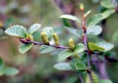
2
1: 日本最東端のケショウヤナギ(Salix arbutifolia)
2: ヤチカンバの果実(Betula ovalifolia)
-
ダム水源地環境整備センター応用生態研究助成(2010–2011)を受けて、
ケショウヤナギの研究をしました。
長野と北海道に隔離分布するケショウヤナギの分布を調査し、
絶滅確率を推定しました。
核のマイクロサテライト遺伝子座を単離し
(Hoshikawa et al. 2009 Mol Ecol Resour)、
帯広川で、河川間の花粉散布と花粉親多様度をあきらかにしました
(Hoshikawa et al. 2012 Botany)。
また、東アジアの系統地理を解明しました
(Nagamitsu et al. 2014 Popul Ecol)。
-
北海道の2ケ所の湿原にしか生育しないヤチカンバの
形態と分子の変異をあきらかにしました
(Nagamitsu et al. 2004 Plant Species Biol)。
さらに、中国北東部の大興安嶺の湿地にはヤチカンバは分布せず、
Betula furticosaとB. middenforfiiが分布することがわかりました
(Dun et al. 2024 Bot J Linn Soc)。
-
八倍体のヤエガワカンバは、北東アジアの大陸部に広く分布しますが、
日本には北海道東部と本州中央部に隔離分布します。
ヤエガワカンバの遺伝変異を沿海州、北海道、本州で調べたところ、
本州の集団が遺伝的に分化し、北海道と沿海州の集団は近縁であることがわかりました
(Nagamitsu et al. 2025 Plant Species Biol)。
-
東北地方および北海道のハマナスの核と葉緑体の遺伝的変異を調べ、
均質な遺伝構造を持つことをあきらかにしました
(Nagamitsu 2017 Plant Species Biol)。
-
希少な樹木の保全のため、
シデコブシ(Setsuko et al. 2013 BMC Ecology)、
ハナノキ(Kanazashi et al. 2015 J Forest Res)
の研究を手伝いました。
-
小笠原諸島に行き、
シマホルトノキの生態型分化
(Sugai et al. 2023 Plant Species Biol;
Sugai et al. 2013 J Plant Res)、
モモタマナの遺伝構造
(Setsuko et al. 2017 Plant Species Biol)
の共同研究をしました。
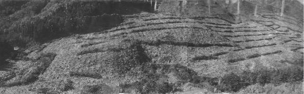
1
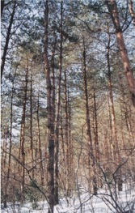
2
1: アカマツ産地試験地の造成(Prevenance-test-site construction)
2: 産地試験地のアカマツ(Pinus densiflora trees in a test site)
-
50年生カラマツの長野県の産地試験地で、樹木の形質と成長の産地間変異が
日本海側と太平洋側の気候の影響を受けていることをあきらかにしました
(Nagamitsu et al. 2014 Tree Genet Genom)。
長野県と北海道の産地試験地で得られた30年生カラマツのデータから、
この産地間変異は異なる生育環境でも生じていることがわかりました
(Nagamitsu et al. 2014 J Forest Res)。
-
また、30年生アカマツの相互移植試験の結果を解析し、
北方への種苗移動が、南方への種苗移動よりも
生存と成長をより低下させることを示しました
(Nagamitsu et al. 2015 Tree Genet Genom)。
-
鳥取大学蒜山演習林と北海道大学名寄苗畑のミズナラ産地試験地を組み合わせて、
異なる気候条件の地域に種苗を移動すると成長が40%低下し、
産地間交配による実生が更新することを示しました。
(Nagamitsu et al. 2021 Forest Ecol Manag)。
交雑は、植物の地理的分布の端で変異をもたらす
Hybridization generates variation in range margins of plants
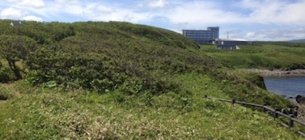
1
1: 北海道北部のカシワ・ミズナラ海岸林(Coastal oak forests in northern Hokkaido)
-
科研費（2017–2022基盤C）が当たり、
適応的遺伝子の浸透の研究を始めました。
北海道北部の海岸林にはいわゆる「モンゴリナラ」が生育すると言われています。
カシワの分布北限より北の海岸に生育するこのナラは、
カシワとの交雑に由来することがわかりました
(Nagamitsu et al. 2018 J Plant Res)。
ミズナラとカシワの雑種にはカシワモドキという和名がついているので、
これからはそう呼びましょう。
ゲノムワイドSNPを用いて、このカシワモドキの交雑後世代と、
浸透したゲノム領域をあきらかにしました
(Nagamitsu et al. 2020 New Phytol)。
北海道稚内市（海岸）と中川町（内陸）にあるミズナラとカシワおよびそれらの雑種の共通圃場で、
カシワモドキの遺伝型と表現型および生存と成長を測定しました。
カシワモドキは、海岸でミズナラより生存と成長がカシワと同様によく、
内陸でミズナラより生存と成長がカシワと同様に悪いことがわかりました。
カシワに似た表現型をもつカシワモドキの形質に関連した遺伝子座を検出したところ、
浸透ゲノム領域に位置することがわかりました。
(Nagamitsu et al. 2024 Plant Species Biol)。
-
分類が難しいミズナラに取り組むことにしました。
ミズナラの変種とされているミヤマナラが
ミズナラから遺伝的に分化していることをあきらかにしました
(San Jose-Maldia et al. 2024 Plant Species Biol)。
-
カスミザクラとオオヤマザクラの交雑帯（栃木県足尾）で、
標高間の送粉が交雑に寄与し、
浸透交雑が起きていることていることをあきらかにしました
(Tochigi et al. 2021 Plant Species Biol)。
さらに、カスミザクラの分布北限（北海道静内）と
オオヤマザクラ分布南限（岡山県蒜山）の交雑帯を、
両種の分布中央部（栃木県足尾）の交雑帯と比較し、
南の端の交雑帯で、遺伝的混合が進み、
葉の形質で表現型が浸透しているにもかかわらず、
開花期の種間差は維持されている（浸透がみられない）ことがわかりました
(Nagamitsu et al. 2025 Plant Species Biol)。
-
北海道のアポイ岳に固有のアポイカンバの
系統学と集団遺伝学、繁殖生態学的研究を、
環境省地球環境保全等試験研究費(2002–2004)の一部を受けて行いました。
アポイカンバの種子生産に対する花粉制限と
ダケカンバとの生殖隔離をあきらかにしました
(Nagamitsu et al. 2006 Biol Conserv)。
また、アポイカンバが
ダケカンバとヤチカンバとの雑種に起源することをあきらかにしました
(Nagamitsu et al. 2006 Plant Species Biol)。
この仕事に対して
Plant Species Biology Best Paper Award
をいただきました。
さらに、アポイカンバが、異質四倍体にもかかわらず、
同質四倍体でみられる四価体型の遺伝様式を持つことを示しました
(Nagamitsu et al. 2014 Silv Genet)。
2025/03/03 updated
[Index]